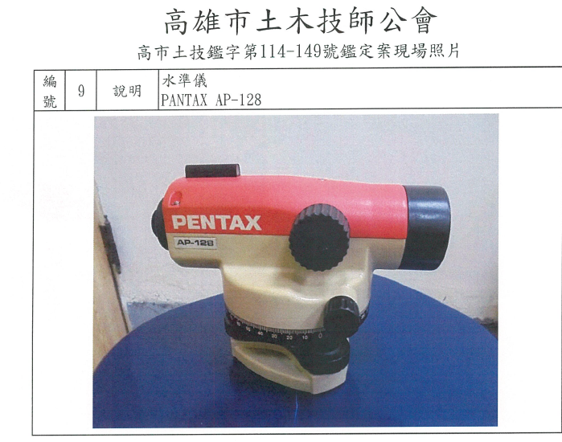

PENTAX AP-128 水準儀公司提供之設備參考照（原圖保留）
供型號辨識；不代表本案測量當日拍攝。
先指定起訖點；同一 BM 回測時，起點與終點選同一點。
容許值及分配方式須由案件指定。沒有已知終點高程或未完成測線時，只顯示暫算高程；超限時不產生改正後高程。
點號和觀測角色分開：S 點也可作前視、後視轉點。
在 Google 地圖選好範圍後，擷取畫面並回到本頁按 Ctrl+V，或按「貼入剪貼簿圖片」。手機可用「匯入位置圖」選擇截圖。請保留地圖原有來源標示，並填寫底圖來源及截圖日期。
新增點位並選擇「放到圖上」，再點圖面位置。底圖僅供位置示意，不以圖上距離計算測線長度。
每一點選「中間視」或「前視」。換站時，前視點會接續成下一站的後視點，兩個讀數顯示在同一列。
公司設備參考照與本案現場拍攝照片分開記錄。

供型號辨識；不代表本案測量當日拍攝。
每張照片連到一個點位，並保留原始圖檔。
列印內容含點位圖、原始讀數、閉合檢核、改正後高程、點位照片及設備照片。公司設備參考照會註明來源與性質；另請匯出完整案件檔保存可編輯資料及本案圖像原檔。